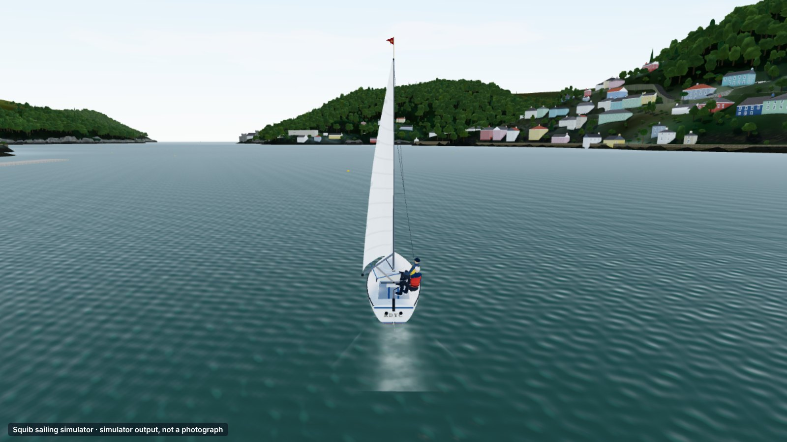

Squib Sailing Simulator
Sail a National Squib, the 5.8 m keelboat raced at the Royal Dart Yacht Club, on the River Dart and in Start Bay. It runs in your browser: nothing to install, no account.
Start sailing How far to trust it

What you can do
Learn to sail
Six short lessons, each checked as you sail, then seamanship: a mooring, coming alongside, man overboard. The Learn map shows what to do next.
Sail the Dart
Free sailing on the river and in Start Bay, in the Met Office forecast or the wind and tide you choose.
Race
Today’s challenge, this week’s short course, a start drill, or up to 20 AI Squibs on a course you choose.
Look back
A debrief after each sail, replays, a ghost of a run to race, and a challenge to share by link.
How far to trust it
- The boat moves by a physics model. Her dimensions are from class sources; the water and sail coefficients are estimates awaiting calibration with Squib sailors. Nothing in it has been validated against a real Squib.
- The river comes from open data. Mid-channel depths, individual moorings, most ferry timetables and the tidal stream are provisional estimates.
- The race judge applies a simplified subset of the racing rules: it is not an authoritative adjudication.
- Not for navigation or performance prediction.
The simulator’s About page and its Instructor view say where each figure comes from.